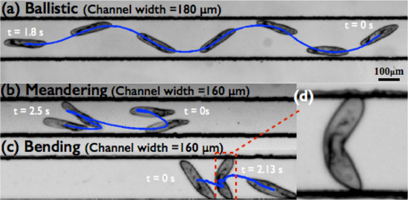

Day 09 - Modeling Drag#

Somersault of Paramecium in extremely confined environments ->
Announcements#
HW 4 is posted; starting project work
Midterm 1 is coming up (Assigned 29 Sep; Due 10 Oct)
REMINDER: Office hours, for now (Mihir-MN; Danny-DC):
Tuesday 6-8pm (MN, Zoom)
Thursday 6-8pm (MN, Zoom)
Friday 2-4pm (DC, 1248 BPS)
Zoom Link: https://msu.zoom.us/j/96882248075
password:
phy321msu
Seminars this week#
MONDAY, September 15, 2025#
Condensed Matter Seminar 4:10 pm,1400 BPS, In Person and Zoom, Host Tyler Cocker Speaker: Marcos Dantus, Michigan State University Title: Ultrafast Electron-Molecule Interactions: From Fragmentation Dynamics to H3+ Formation Zoom Link: https://msu.zoom.us/j/93613644939 Meeting ID: 936 1364 4939 Password: CMP
Seminars this week#
TUESDAY, September 16, 2025#
Theory Seminar, 11:00am., FRIB 1200 lab in person and online via Zoom Speaker: Nadezda Smirnova, CNRS Title: Isospin Symmetry Breaking and Nuclear Beta Decay Zoom Link: 964 7281 4717 Meeting ID: 48824
Seminars this week#
TUESDAY, September 16, 2025#
High Energy Physics Seminar, 1:30 pm, 1400 BPS, Host ~ Kirtimaan Mohan
Speaker: Neil Christensen, Illinois State University
Title: Progress in the Constructive Standard Model
Zoom:
Passcode:
(Joining the Zoom meeting requires a password. Please contact one of the organizers, if you haven’t received it.)
Organized by: Joey Huston, Sophie Berkman and Brenda Wenzlick
Seminars this week#
WEDNESDAY, September 17, 2025#
Astronomy Seminar, 1:30 pm, 1400 BPS, In Person and Zoom, Host~ Speaker: Matthew Murphy, Michigan State University Title: Zoom Link: https://msu.zoom.us/j/887295421?pwd=N1NFb0tVU29JL2FFSkk0cStpanR3UT09 Meeting ID: 887-295-421 Passcode: 002454
Seminars this week#
WEDNESDAY, September 17, 2025#
FRIB Nuclear Science Seminar, 3:30pm., FRIB 1300 Auditorium and online via Zoom Speaker: Katie Yurkewicz of Argonne National Laboratory Title: From Nuclei to Narratives: Lessons Learned on the Journey from NSCL Student to Lab Communications Leader Please see website for full abstract. Please click the link below to join the webinar: Join Zoom: https://msu.zoom.us/j/96657965451?pwd=Isaf23sK5agzaao0Kwaei7AaWHkc4W.1 Meeting ID: 966 5796 5451 Passcode: 479842
Seminars this week#
FRIDAY, September 19, 2025#
QuIC Seminar, 12:30pm, -1:30pm, 1300 BPS, In Person
Speaker: Jeremiah Rowland, Michigan State University
Title: Measurement Reduction Techniques for Measuring Hamiltonians
Full Scheule is at: https://sites.google.com/msu.edu/quic-seminar/
For more information, reach out to Ryan LaRose
Reminder: email me your extra credit seminar write-ups
Goals for this week#
Establish a model for drag forces
Develop an understanding of the process for modeling forces
Produce equations of motion that can be investigated
Start probing the behavior of these systems with math and computing
Reminders#
Force Models#
We have been modeling the drag force using a functional dependence on velocity.
where \(f(v)\) is a function of velocity.
We established (in 1D) there are two common forms of drag force:
Reminders#
Equations of Motion#
The next step is to use Newton’s 2nd Law to write the equations of motion for the system. We found those equation of motion to be:
where \(f(v)\) is the drag force. So for each form of drag we have:
Reminders#
Trajectories#
We can integrate these equations of motion to find the velocity as a function of time. We found:
where \(v_{\text{t,lin}} = \frac{mg}{b}\) for linear drag and \(v_{\text{t,quad}} = \sqrt{\frac{mg}{c}}\) for quadratic drag.
Our Current Investigatory Process#
The Model-to-Trajectory Pipeline#
Model the forces acting on the system
Write the equations of motion using Newton’s 2nd Law
Solve the equations of motion to find trajectories
This is incomplete. We will need to learn how stability, critical points, and phase space can help us understand the behavior of these systems.
We have also only done step 3 analytically. We will need to learn how to use computing to investigate these systems.
Clicker Question 9-1#
For the system of Linear Drag in 1D, we found a solution for the velocity as a function of time, with \(v = 0\) at \(t = 0\). $\(v(t) = v_{term}\left(1-e^{-\dfrac{bt}{m}}\right)\)$
where \(v_{term} = \sqrt{\frac{mg}{b}}\).

CQ 9-1#
Which sketch could be correct for the velocity of the ball?
Clicker Question 9-2#
For the system of Quadratic Drag in 1D, we found a solution for the velocity as a function of time, with \(v = 0\) at \(t = 0\).
where \(v_{term} = \sqrt{mg/c}\). What happens when \(t \rightarrow \infty\)?
The object stops moving.
The object travels at a constant velocity.
The object travels at an increasing velocity.
The object travels at a decreasing velocity.
I’m not sure.
Clicker Question 9-3#
For quadratic drag in 2D, we found the following pair of differential equations:
True or False: This pair of differential equations can be decoupled.
True
False
???
Clicker Question 9-4#
For linear drag in 2D, we found the following pair of differential equations:
True or False: This pair of differential equations is decoupled.
True
False
???
Clicker Question 9-5#
For the gravitational interaction, I want to compute the force acting on body B, located at \(\vec{r}_B\), by body A, located at \(\vec{r}_A\).
The gravitational force is given by:
What is the appropriate form of \(\vec{r}\)?
\(\vec{r} = \vec{r}_A - \vec{r}_B\)
\(\vec{r} = \vec{r}_B - \vec{r}_A\)
Either is ok
Clicker Question 9-6#
We found that the equation of motion for the spring-mass system was:
Your friends have proposed the following general solutions:
How many of them are correct? (1) Only one (2) Two (3) Three (4) Four (5) All of them